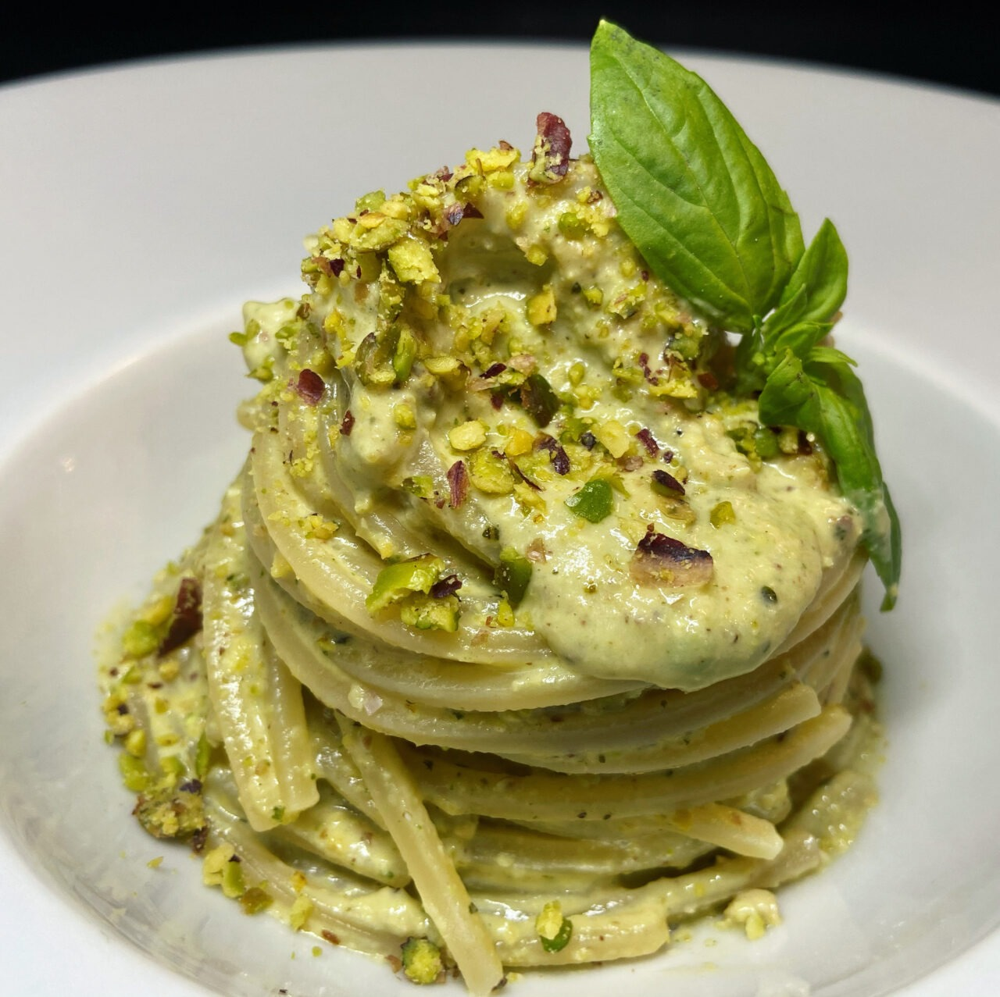

Pistacchio di Bronte
Il pistacchio di Bronte è una varietà coltivata principalmente in Sicilia, a denominazione di origine protetta DOP nota per il suo sapore intenso e aromatico grazie al terreno vulcanico e al clima della zona. Di dimensioni più piccole e con un colore verde brillante, è utilizzato in dolci, gelati, pasticceria e piatti salati, conferendo loro un sapore distintivo. Sottoposto a rigorose normative, questo pistacchio è considerato di alta qualità e di eccellenza gastronomica. La raccolta del pistacchio avviene principalmente a mano, poiché le macchine rischierebbero di danneggiare i gusci dei pistacchi. Questo processo richiede una grande abilità e pazienza da parte dei coltivatori. Il pistacchio è ricco di nutrienti benefici per la salute, tra cui grassi monoinsaturi, proteine, fibre, vitamine e minerali. È considerato un'ottima fonte di energia e può contribuire a una dieta equilibrata.
Storia
La coltura del “Pistacia Vera” si perde nella notte dei tempi. La sua origine antichissima viene ubicata in un'area che comprende Siria, Palestina e Turkmenistan. Citato già nella Bibbia fra i regali inviati da Giacobbe al Faraone, presso la corte della Regina di Saba il pistacchio veniva identificato come un frutto privilegiato da riservare alla famiglia reale. Noto ad Assiri e Persiani, nel mondo greco del III sec. a.C. era apprezzato per i suoi principi curativi, ed altresì inserito nella categoria degli stimolanti fisici e sessuali. La pianta arrivò a Roma nel 30 d.C. con Lucio Vitellio, governatore generale della Siria, come albero esotico scovato in uno dei paesi dell'impero. Ne venne tentata la coltivazione in Liguria, Puglia, Campania e Sicilia, ma l'esperienza non diede eccellenti risultati, probabilmente a causa delle limitate conoscenze climatiche dell'epoca. Furono gli Arabi, attorno al X sec. che incrementarono la coltivazione dei pistacchi in Sicilia, alle pendici dell'Etna (Bronte), favoriti dall'habitat naturale del terreno concimato da ceneri vulcaniche. Durante l'Undicesimo secolo il medico Avicenna parlando delle virtù dei pistacchi sentenziava: “usansi i pistacchi nei cibi e nelle medicine che si fanno per madonna Venere”. In seguito a questo giudizio il frutto divenne per secoli, assieme a mandorle e pinoli, ingrediente fondamentale dei cibi “restaurativi” somministrati a coloro che soffrivano di deperimento fisico e sessuale. L'albero del pistacchio, un groviglio di rami contorti e nodosi capaci di aggrapparsi ai versanti più scoscesi, fiorisce in aprile e offre il raccolto tra fine agosto e inizio ottobre. Il suo olio è utilizzato in cosmesi soprattutto per le doti emollienti. Questo frutto di un bel colore verde smeraldo è un vero e proprio cocktail energetico contenente: calcio, ferro, magnesio, fosforo, oltre a diverse vitamine. In cucina i pistacchi possono essere utilizzati tostati o salati, interi o tritati, per accompagnare salse, gelati, dolci, pasta, carni insaccate.

Bronte
Bronte è un comune della provincia di Catania, in Sicilia, celebre per la coltivazione del pistacchio, simbolo della città. Caratterizzato da un paesaggio collinare e montuoso con vegetazione mediterranea, ha un clima temperato con estati calde e secche e inverni miti e piovosi. La sua storia risale all'epoca greca e romana, con un centro storico ricco di edifici storici e tradizioni popolari. Oltre alla produzione di pistacchi, Bronte è nota per la sua cucina tradizionale e offre opportunità per escursioni nelle vicine montagne dell'Etna e nella regione circostante.
Cucina di Bronte
Il pistacchio di Bronte è un ingrediente fondamentale nella cucina locale, utilizzato in una vasta gamma di piatti dolci e salati. Nei dolci, come gelati, cassata siciliana e cannoli, aggiunge un sapore unico e croccante. Nella pasticceria, viene impiegato in biscotti, torte e cioccolatini per dare croccantezza e sapore. Nei piatti salati, come insalate, risotti e piatti di carne, la sua consistenza croccante e il sapore intenso si sposano bene con altri ingredienti. La crema di pistacchio è usata come condimento per pasta e pesce, oltre che per accompagnare piatti tradizionali. In breve, il pistacchio di Bronte è un ingrediente versatile che contribuisce a creare piatti apprezzati sia localmente che globalmente.
Sicilia
La Sicilia è la più grande isola del Mediterraneo, ricca di storia, cultura e paesaggi mozzafiato. Le sue coste bagnate dai mari Ionio e Tirreno offrono una varietà di paesaggi, mentre al centro si trova l'imponente vulcano attivo dell'Etna. La regione vanta un'eccezionale eredità storica, evidente nei monumenti antichi e nei siti archeologici come la Valle dei Templi ad Agrigento. La cucina siciliana è rinomata per la sua varietà e autenticità, con piatti che combinano ingredienti freschi e locali come pesce, agrumi e pistacchi. I paesaggi spaziano dalle coste rocciose alle colline coperte di vigneti, offrendo molte opportunità per attività all'aria aperta. In sintesi, la Sicilia è una destinazione affascinante che offre un mix unico di storia, cultura, cucina e paesaggi, ideale per i viaggiatori in cerca di esperienze autentiche.